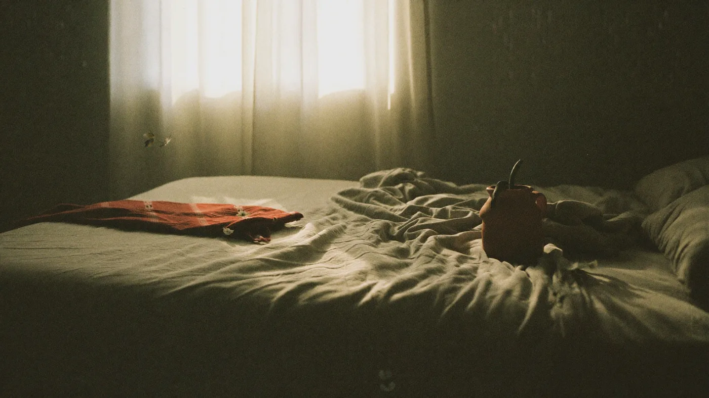
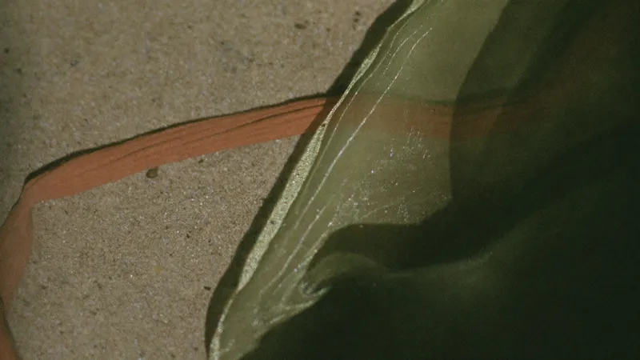

Hypersensibilité
Émotions qui débordent, fatigue sociale, réactions disproportionnées. On travaille le filtre, pas la sensibilité elle-même — elle reste une force.
Cabinet d'hypnose · Avrillé — Angers
Tabac, sommeil, stress, phobies, hypersensibilité. Une hypnose moderne où vous restez conscient et acteur — et où vous repartez avec des outils réutilisables seul.
Domaines d'application
Dépendances, TOC, tics, douleurs, problèmes de peau, allergies, difficultés de conception : la liste n'est pas fermée. Si votre motif n'y figure pas, appelez, on regarde ensemble.
Émotions qui débordent, fatigue sociale, réactions disproportionnées. On travaille le filtre, pas la sensibilité elle-même — elle reste une force.
Une séance longue et structurée, sans substitut ni volonté héroïque.
Endormissement, réveils nocturnes, mental qui tourne au moment du coucher.
Anticipation, tension permanente, crises d'angoisse.
Avion, conduite, animaux, prise de parole, milieux médicaux.
Compulsions, grignotage émotionnel, rapport au corps.
L'approche
La plupart des difficultés que je reçois viennent d'une gestion devenue défaillante des émotions et des mécanismes de pensée. Les pensées produisent les émotions, les émotions produisent les réactions. Agir sur ce mécanisme change la chaîne entière.
Mon travail n'est donc pas de vous « réparer » pendant que vous dormez, mais de vous transmettre des outils que vous réutilisez seul, longtemps après la dernière séance.
Mon parcours et ma formationDéroulé
Comptez 1h15 pour un adulte, 1h30 pour une première séance d'arrêt du tabac.
On pose votre situation, ce que vous avez déjà tenté, et l'objectif concret. Rien n'est standardisé : la séance se construit à partir de là.
Assis ou allongé, conscient, libre de vos mouvements. Je guide votre attention, vous restez aux commandes du début à la fin.
Vous repartez avec deux ou trois techniques simples, à réutiliser dès que la situation se présente à nouveau.
Beaucoup n'ont besoin que d'une séance. Si une suite est utile, on la planifie ensemble — jamais par principe.
Tarifs
Règlement en espèces, chèque ou virement à la fin de la séance. Séance non remboursée par la Sécurité sociale, certaines mutuelles participent.
65 €
79 €
139 €
Rendez-vous annulé moins de 24 h à l'avance : la séance reste due, sauf imprévu majeur.
Qui suis-je ?
En 2012, je découvre des vidéos d'hypnose de rue. Ce qui me frappe n'est pas le spectacle, mais la rapidité avec laquelle un comportement peut changer. Je m'entraîne, d'abord seul, puis auprès d'amis, puis dans la rue et les parcs.
Cette pratique empirique atteint vite ses limites. Je m'inscris à l'école de relaxologie et d'hypnose des Ponts-de-Cé, où la théorie rejoint enfin la pratique. J'ouvre mon cabinet à l'issue de cette formation. Je forme aujourd'hui à mon tour de futurs praticiens.
Le blog
Des réponses écrites aux questions qui reviennent le plus souvent en cabinet. C'est ici qu'atterrissent les articles publiés depuis PostPilot.

L'insomnie d'endormissement n'est presque jamais un problème de fatigue. C'est un problème d'attention — et c'est précisément là que l'hypnose intervient.
Lire l'article →
Ce que la volonté seule ne peut pas faire, et pourquoi ce n'est pas un défaut de caractère.
Lire l'article →

Ressentir fort n'est pas le problème. Ne plus pouvoir baisser le volume, si.
Lire l'article →
Questions fréquentes
Non. L'état d'hypnose ressemble à celui où l'on est absorbé par un film ou la route. Vous entendez tout, vous pouvez parler et interrompre la séance quand vous le souhaitez.
Pour la majorité des motifs, une à trois séances suffisent. L'objectif est que vous n'ayez plus besoin de revenir.
Pas par la Sécurité sociale. Certaines mutuelles proposent un forfait « médecines douces » : une facture vous est remise sur demande.
Jamais. L'accompagnement est complémentaire d'un suivi médical ou psychologique. N'arrêtez aucun traitement sans avis de votre médecin.
Prendre rendez-vous
Le premier échange téléphonique est gratuit et sans engagement. Il sert à vérifier que l'hypnose est la bonne approche pour vous.